Group Project 2 · Oct 2026 · team of 3
Expert on Speed-Dial
Remote help for Blender. A stuck novice calls an expert's phone. The expert talks, and the buttons they name light up green in the novice's Blender. When the novice clicks the right one, the expert's phone buzzes.
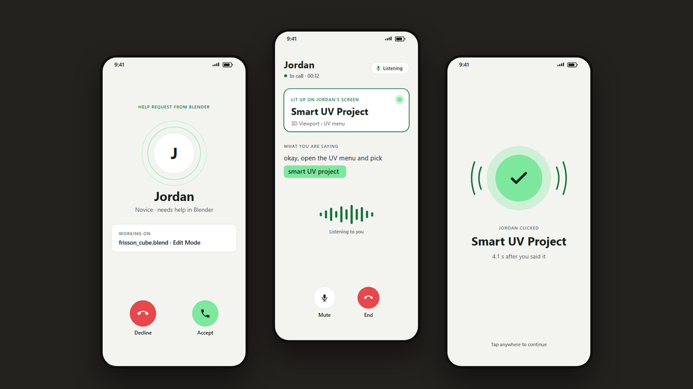
The brief
Help an expert in 3D software share what they know with a novice, remotely and in real time, using the body (sensing, voice, touch, haptics) rather than relying on a plain video call.
Our answer: the expert doesn't describe where to click. They just say the button's name, and it lights up in the novice's own Blender.
- novice
Clicks the expert's name in a Blender side panel. - expert
Their phone rings with a help request. They accept. - expert
Talks: "okay, now add Collision…" - novice
The Collision button glows green in their Blender. - novice
Clicks the glowing button. - expert
Phone buzzes ✓, so they know it landed and can move on.
Ten ideas, then one
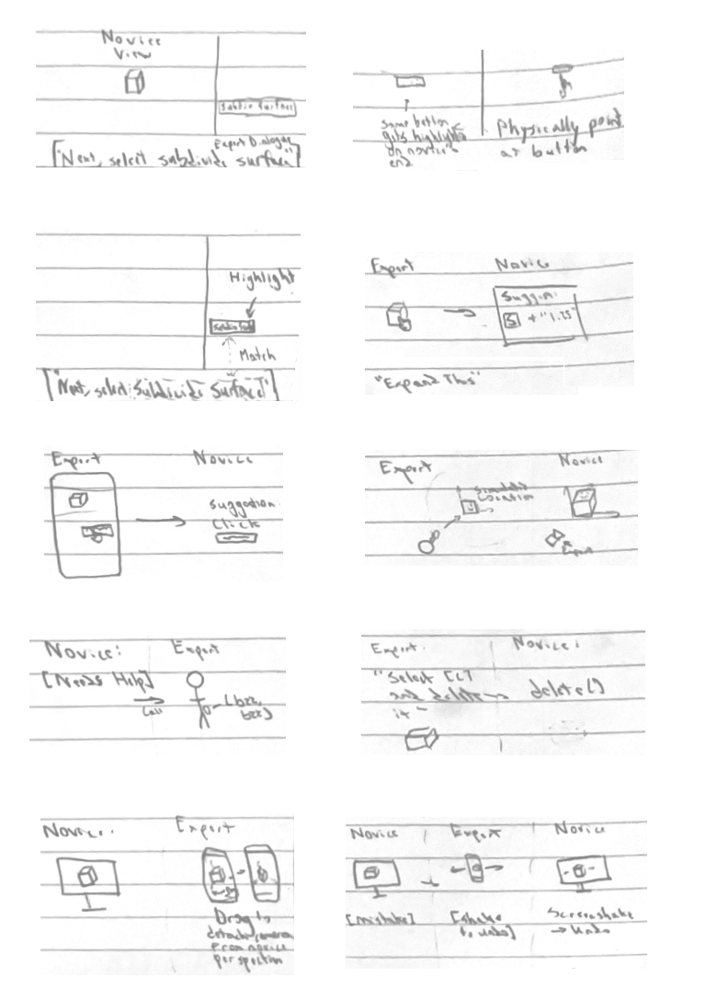
- 01Voice caption: the expert's words appear by the button
- 02Physical pointing: point at a button, it highlights for the novice
- 03Voice match: the spoken button name lights up ← our direction
- 04Shortcut suggestion: "expand this" → press S, type 1.25
- 05Phone tap: tap a button on your phone, the novice gets a hint
- 06Simulated location: move a copy to show where it goes
- 07Call and buzz: the novice asks for help, the phone buzzes
- 08Voice command: "select it and delete it" just runs
- 09Camera drag: rotate the novice's view from your phone
- 10Shake to undo: shake the phone, the mistake is undone
Why voice won: experts already talk novices through steps, so there's no new gesture to learn. The help shows up on the real button instead of on a screen the novice has to interpret. Ideas 07 and 09 survived as the call/buzz and the 3D view.
What I designed: the expert's phone
I designed the five core screens of a call in Figma. That afternoon the team switched the demo task, and Elijah adapted my screens to it. Toggle to compare.
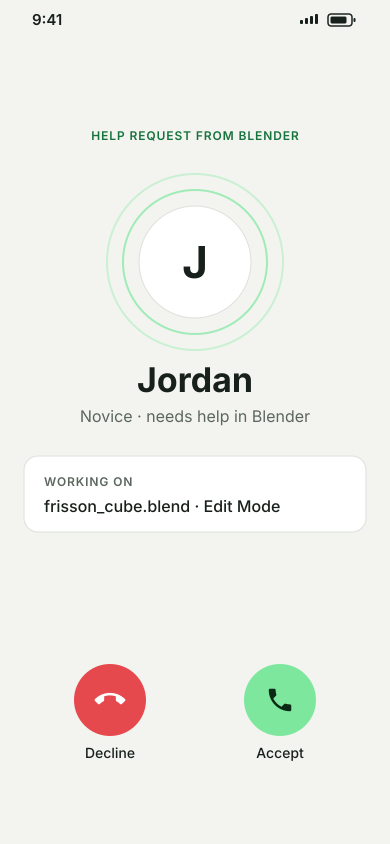
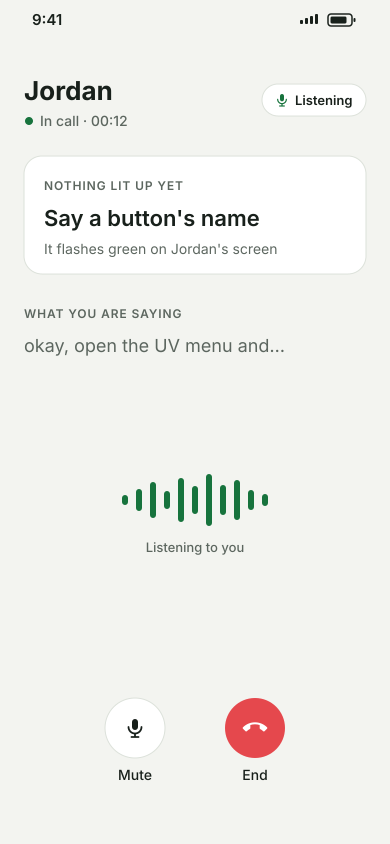
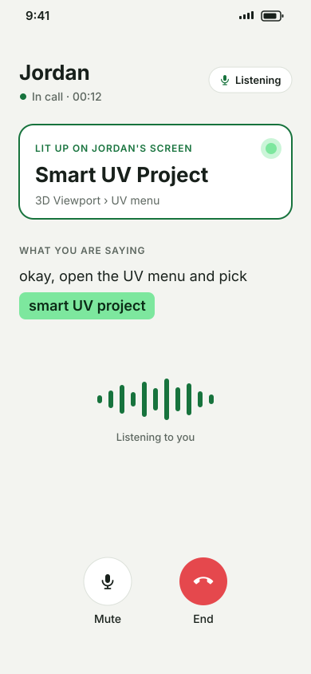
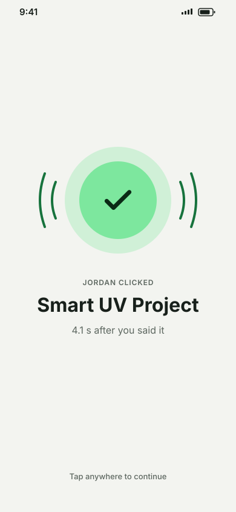
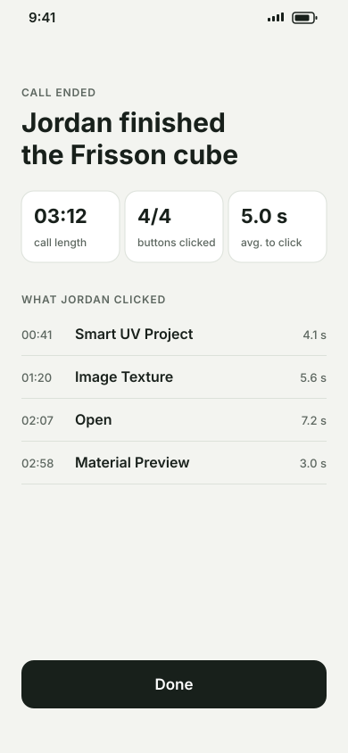
Adapted by Elijah for the cloth demo. The structure of each screen carried over from mine; the live screenshare at the top is new.
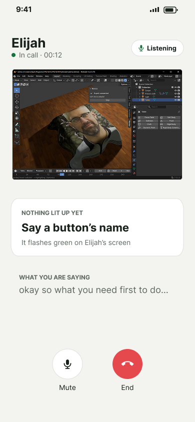
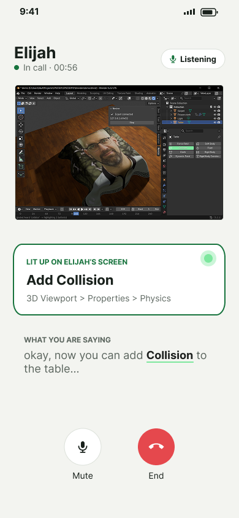
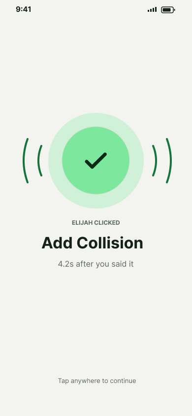
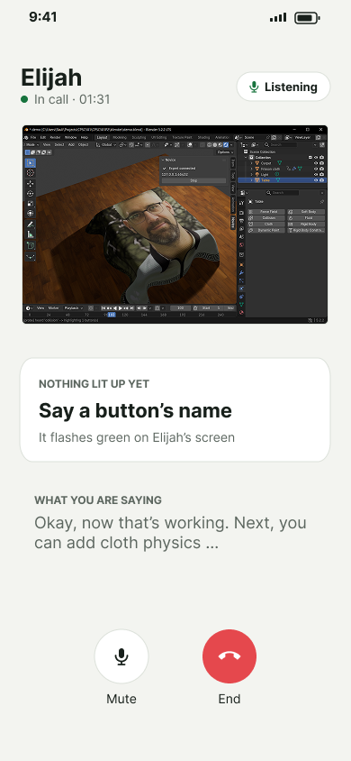
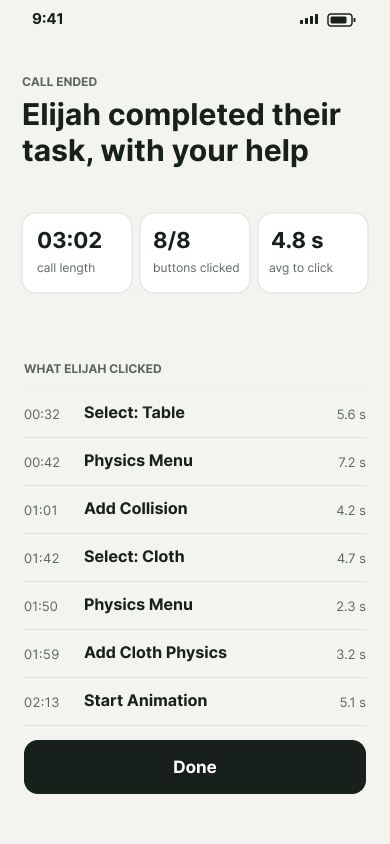
Why the screens look like this
-
Green means "this button" on both screens
The lit-up card and the buzz use
#7DE79E, the exact green our add-on flashes in Blender. Expert and novice share one colour for one meaning. - The phone mostly shows; the voice does the work The expert is busy talking, so the only taps are Accept, Mute, and End. Everything else is feedback: the transcript, the lit button, the buzz.
- Close the loop on every instruction The buzz screen and the summary show time-to-click, so the expert knows an instruction landed without having to ask "did you find it?"
-
Context before you answer
The incoming call names the file and mode (
frisson_cube.blend · Edit Mode), so the expert doesn't start cold.
How my screens changed
Our highlighter couldn't reach Blender's top menus, which UV unwrapping needs, so the team moved the demo to a cloth simulation. Because every screen was built around one concrete task, the switch was mostly relabelling: the layout, the green card, the buzz, and the summary all stayed.
Around my screens
For context, these views came from my teammates. They let the expert look closer when saying a button's name isn't enough.
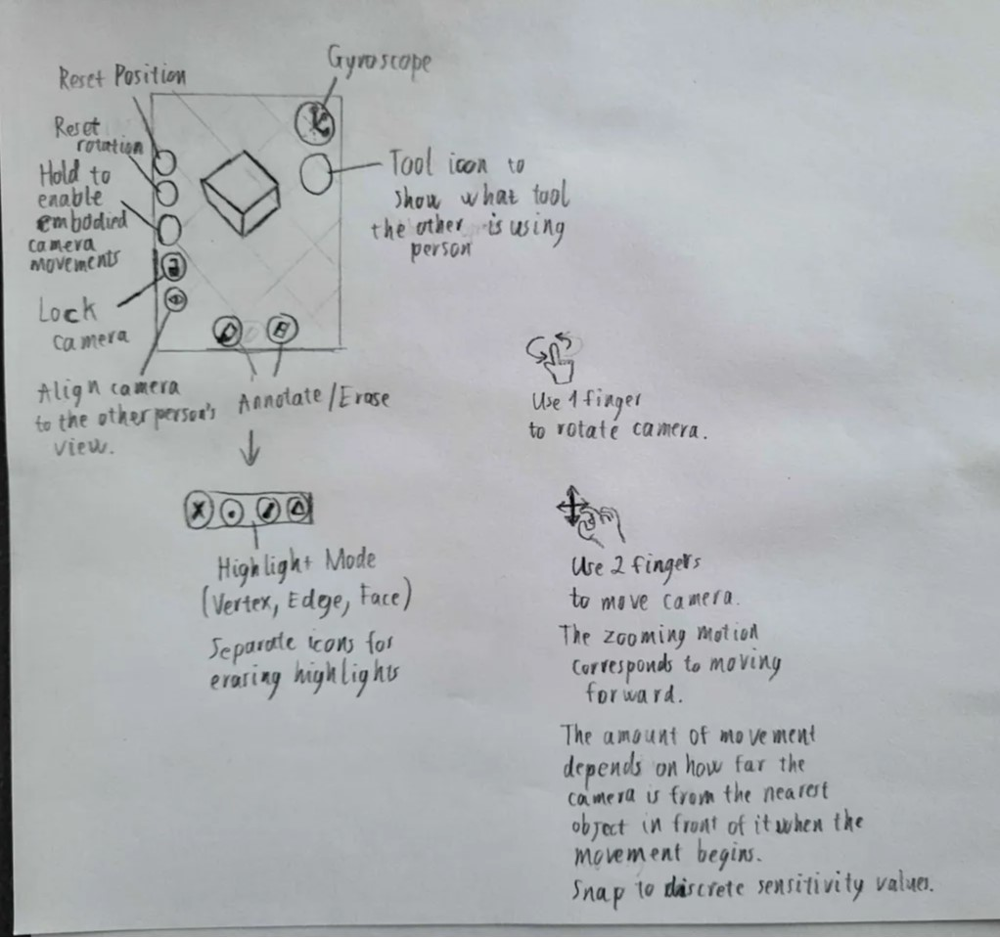
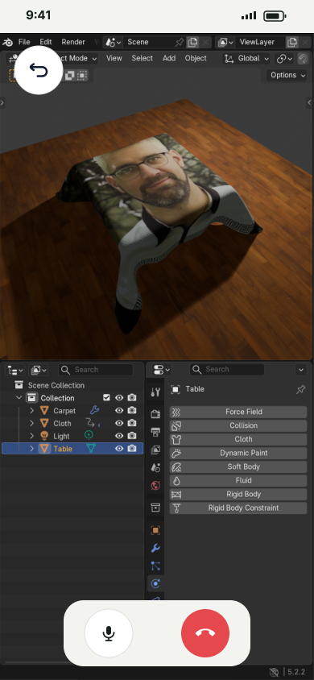
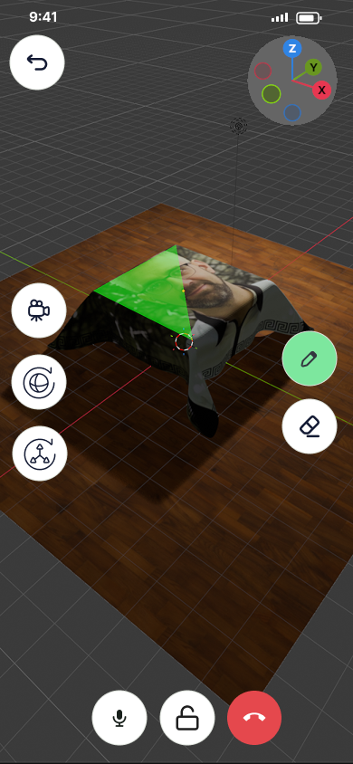
Putting the write-up together
- Assembled the design-process write-up I took on the write-up while my teammates finished the prototype and demo video: the structure, the figures, and how they read in order.
- Cropped and captioned the ten sketches One line per sketch, so someone outside our team could follow which idea was which and why number 3 won.
What I learned
Design for someone who's busy talking
The expert's main input is their voice, so the phone's job is to show, not to ask for taps.
Build around one concrete task
Because my screens named a real file and real buttons, the team could swap the whole demo task by relabelling instead of redesigning.
What I'd change
Test a call with a real expert and novice before polishing. I'd also prototype the buzz on an actual phone: it's the one part of the design you feel instead of see.
Team credit: Elijah Mickelson built the Blender highlighter and demo scene, drew the ten sketches, and adapted the screens for the cloth demo. Leo Nguyen built the networking between the two sides and drew the phone and convergence sketches. Speech recognition by Vosk.